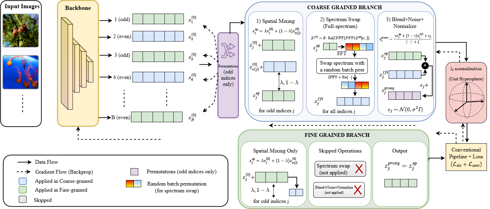
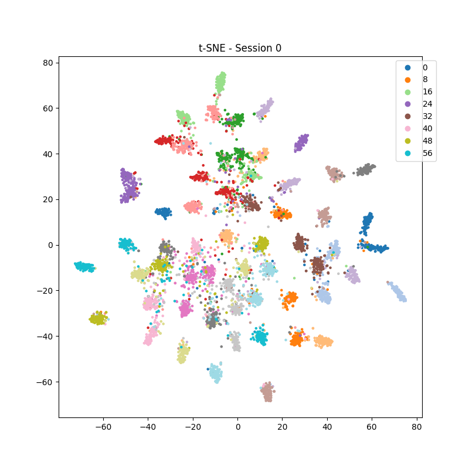
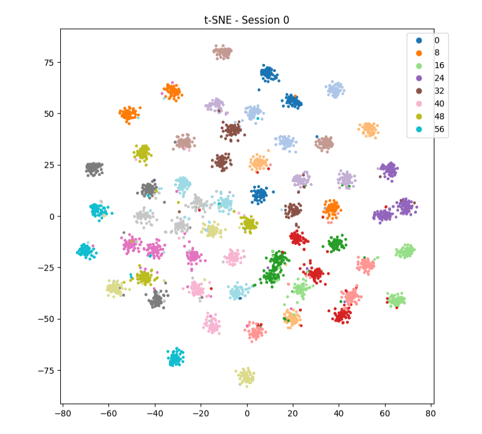

Few-shot incremental learning focuses on forming algorithms that enable a model to continually learn new information or classes from limited data while retaining knowledge of previously learned classes. Existing approaches commonly freeze the network parameters corresponding to previously learned classes during the incorporation of new classes. However, this strategy often results in inadequate separation of the boundaries of old classes. As a result, when new classes are introduced, their features may overlap with the boundaries of the old classes. To address these challenges, we propose a novel feature-level augmentation strategy designed to diversify and strengthen the feature distributions of previously learned classes before incremental updates, thus facilitating the integration of new classes. Our approach generates multi-mode augmented features through (i) spatial feature mixing, (ii) frequency-domain feature perturbation, and (iii) controlled noise, producing diverse proxy representations of old classes. Our proposed enrichment of the internal variation of old class clusters allows the classifier to better distinguish old classes from new ones, even in the presence of potential overlap. We validate the effectiveness of our framework through experiments on two FSCIL benchmark datasets: CIFAR-100 and miniImageNet. The results demonstrate significant improvements over existing methods, achieving state-of-the-art performance.

Multi-mode augmentation operates in feature space before classifier update, improving robustness across incremental sessions.
Interpolates feature embeddings to increase intra-class variability.
Injects spectral diversity using Fourier-domain transformations.
Stabilizes representation space under stochastic perturbations.
| Method | Accuracy per Session (%) ↑ | Avg Acc. | ΔFI | ||||||||
|---|---|---|---|---|---|---|---|---|---|---|---|
| 0 | 1 | 2 | 3 | 4 | 5 | 6 | 7 | 8 | |||
| Finetune | 61.31 | 27.22 | 16.37 | 6.08 | 2.54 | 1.56 | 1.93 | 2.60 | 1.40 | 13.45 | -- |
| iCaRL | 61.31 | 46.32 | 42.94 | 37.63 | 30.49 | 24.00 | 20.89 | 18.80 | 17.21 | 33.29 | +15.81 |
| EEIL | 61.31 | 46.58 | 44.00 | 37.29 | 33.14 | 27.12 | 24.10 | 21.57 | 19.58 | 34.97 | +18.18 |
| Rebalancing | 61.31 | 47.80 | 39.31 | 31.91 | 25.68 | 21.35 | 18.67 | 17.24 | 14.17 | 30.83 | +12.77 |
| TOPIC | 61.31 | 50.09 | 45.17 | 41.16 | 37.48 | 35.52 | 32.19 | 29.46 | 24.42 | 39.64 | +23.02 |
| IDLvQ-C | 64.77 | 59.87 | 55.93 | 52.62 | 49.88 | 47.55 | 44.83 | 43.14 | 41.84 | 51.16 | +40.44 |
| SPPR | 61.45 | 63.80 | 59.53 | 55.53 | 52.50 | 49.60 | 46.69 | 43.79 | 41.92 | 52.76 | +40.52 |
| F2M | 67.28 | 63.80 | 60.38 | 57.06 | 54.08 | 51.39 | 48.82 | 46.58 | 44.65 | 54.89 | +43.25 |
| CEC | 72.00 | 66.83 | 62.97 | 59.43 | 56.70 | 53.73 | 51.19 | 49.24 | 47.63 | 57.75 | +46.23 |
| MetaFSCIL | 72.04 | 67.94 | 63.77 | 60.29 | 57.58 | 55.16 | 52.90 | 50.79 | 49.19 | 58.85 | +47.79 |
| FACT | 72.56 | 69.63 | 66.38 | 62.77 | 60.60 | 57.33 | 54.34 | 52.16 | 50.49 | 60.70 | +49.09 |
| LIMIT | 72.32 | 68.47 | 64.30 | 60.78 | 57.95 | 55.07 | 52.70 | 50.72 | 49.19 | 59.06 | +47.79 |
| TEEN | 73.53 | 70.55 | 66.37 | 63.23 | 60.53 | 57.95 | 55.24 | 53.44 | 52.08 | 61.43 | +50.68 |
| SAGG | 78.77 | 74.75 | 71.20 | 68.12 | 65.16 | 62.10 | 59.22 | 57.28 | 56.19 | 65.89 | +54.79 |
| ALICE | 80.60 | 70.60 | 67.40 | 64.50 | 62.50 | 60.00 | 57.80 | 56.80 | 55.70 | 63.99 | +54.30 |
| SAVC | 81.12 | 76.14 | 72.43 | 68.92 | 66.48 | 62.95 | 59.92 | 58.39 | 57.11 | 67.05 | +55.71 |
| MICS | 84.40 | 79.48 | 75.09 | 71.40 | 68.89 | 66.16 | 63.57 | 61.79 | 60.74 | 70.17 | +59.34 |
| FACL | 86.68 | 81.49 | 76.65 | 72.65 | 69.71 | 66.02 | 63.08 | 61.17 | 59.48 | 70.77 | +58.08 |
| Flexi-FSCIL | 77.37 | 74.96 | 70.73 | 66.50 | 63.95 | 62.44 | 61.49 | 60.29 | 59.69 | 66.38 | +58.29 |
| Ours | 97.25 | 92.52 | 87.34 | 82.88 | 80.23 | 75.20 | 71.19 | 68.90 | 66.18 | 80.19 | +64.78 |
80.19% average accuracy
+9.42% improvement over previous SOTA
76.48% average accuracy
+6.08% improvement over previous SOTA
Significantly reduced
Stable performance across 8 incremental sessions


Our method produces tighter, more separable clusters compared to baseline FSCIL approaches.
We demonstrate that enriching feature distributions during the base session leads to significantly more robust incremental learning. Unlike prior methods that expand feature space, we strengthen internal structure, resulting in better generalization and reduced interference.